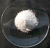

potassium-chloride

Definition: Potassium chloride (KCl, or potassium salt) is a metal halide salt composed of potassium and chlorine. It is odorless and has a white or colorless vitreous crystal appearance. The solid dissolves readily in water, and its solutions have a salt-like taste. Potassium chloride can be obtained from ancient dried lake deposits. KCl is used as a fertilizer, in medicine, in scientific applications, domestic water softeners (as a substitute for sodium chloride salt), and in food processing, where it may be known as E number additive E508.
Source: Wikipedia
Wikipedia Page (Something wrong with this association? Let us know.)
Wikidata Page (Something wrong with this association? Let us know.)
Occurs in: